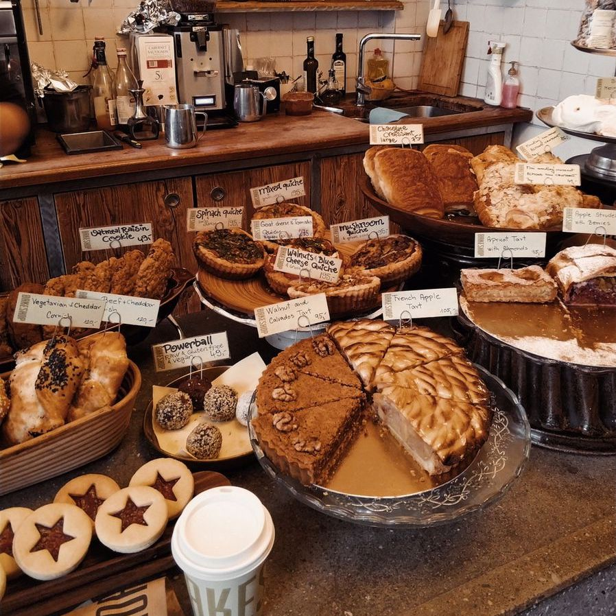
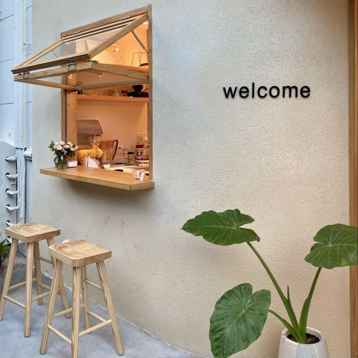

"Douceur crémeuse,
intensité dorée"

Petit déj’, brunch ou déjeuner, à toute heure de la journée.
Chez Auburn & Cream, on vous accueille tous les jours avec une cuisine maison, simple et généreuse, servie en continu de 9h30 à 17h en semaine et jusqu’à 18h le week-end.
Sur place ou à emporter, sans réservation. On est là tous les jours pour vous, dans un lieu qu’on a imaginé comme un refuge doux et chaleureux, à notre image.

Ici, tout est pensé au rythme des saisons (et de nos envies du moment).
Des œufs cuisinés comme vous les aimez, un plat du jour qui change souvent, et bien sûr nos incontournables : cinnamon roll tout juste sorti du four, cheesecake basque ultra fondant, et autres douceurs faites maison.